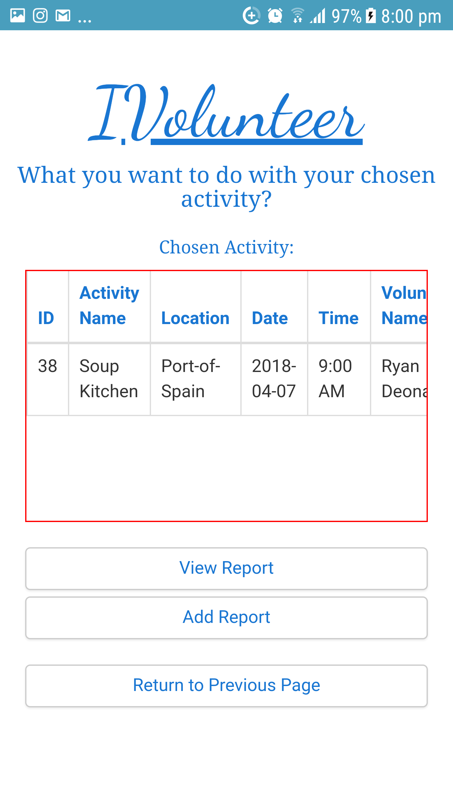
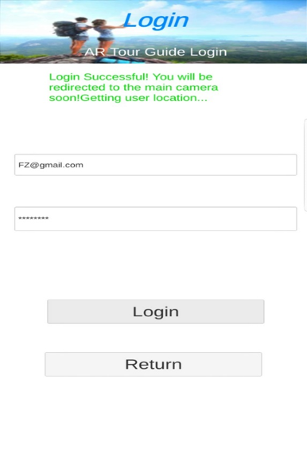

Hey, I'm Ryan! I'm a recent graduate of SBCS where I completed my BSc in Computing and Information Systems
with the University of Greenwich.
I'm a novice web developer, with most of my experience being university projects and online learning, up until recently where I was commissioned to developed
a social media-like blogging site called Sincerely, Me.
I'm always eager to learn and develop my skills however I can, with some of my more recent endeavors in learning being
brushing up on my JavaScript to try frameworks like React and Node!
Skills and Abilities
PHP
C#/Unity
JavaScript
HTML
SQL
Firebase
CSS
Git
Projects
These are projects I'm most proud of.
These include either deep complexity or are real-world project built for others.
Augmented Reality Final Project
Sincerely, Me
To view my academic projects click on the star below!
These projects span most of my academic career.
These are projects done mostly during my degree that showcase my abilities.
BTEC Final Project
Mobile App Development
Web Application Development
Enterprise Web Development
About
I am capable, hardworking, resourceful and creative with most of these traits being reflected in the code I write and use.
I do not scare easy and tend to take on very ambitious projects, with my final project at the degree level being testament to that.
Out of my entire year, I was the only one brave enough to step outside the box and try something new!
I work well in groups or teams. I always try to be friendly, approachable and accommodating. I help others with their coding problems
and even teach others based on what I know.
I am also very interested in learning and trying new things! My current endeavors include: Learning Android to a higher level, Machine Learning and Game Development using Unity!
This project was done based around my father's business. He works as an industrial electrician and for my final project
at the degree level, I decided to try automating his business process. For this I had to do a series of interviews with
both my mother and father to get an idea of the business process and model it as a website.
In terms of languages; PHP, SQL (mysqli) and JavaScript were used alongside HTML and CSS through Bootstrap and Regular Expressions (for validation) were used to create this site.
Some of the functionality of this site includes:
Repair Booking Creation
Request Repair Quotation
View Repair History
View/Answer Customer Quotations
View/Manage Customer Bookings
Repair Management of Bookings
Invoice Creation on Repair Completion
Report Generation
Registration
Login
Logout
These are some screenshots of the system's more advanced areas:
Bookings Functionality:
The bookings functionality stretched across the users and the admin. The first two images are customer-side
for the bookings creation and viewing. The last is the admin dashboard for managing bookings with focus put into;
managing repairs, closing bookings, generating invoices etc.
Quotations Functionality
The quotations functionality, similar to the bookings functionality stretched across both roles. From left to right, the
first screenshot is a customer-side form that allows a user to request a quote with the second screen being a view of all answered
and unanswered quotations. The third and fourth screens are admin-side that are focused on viewing the details and images of a
quotation and responding to the quotation.
Reporting Functionality
These two screenshots display the reporting functionality for the system, with the first screen being a simple report
that shows the amount of bookings made within a certain period. Whereas the other screen is a sales report that shows a breakdown
of the sales for an entered period.
Other Functionality
These two screenshots are a bit of extra functionality that was added into the system. From left to right, the first screen is
a listing of all the repairs made to a person's tool and the second screen is a simple checkout screen.
This checkout is only a mock-up done for the project, like all fields used for this system validation exists
but this checkout is not functional.
Mobile App Development
This application was an assignment done at the degree level, the focus of the application was the creation of a
volunteer-type application with the premise of getting others involved with volunteering activities. This application was
built partially in Android as its own project and built complete in Apache Cordova, both using Regular Expressions for their validation.
The assignment required us to build
the application twice effectively, once in Android to a limited extent and once in Apache Cordova as a full app, with SQLite used
as the database. Apache Cordova uses JavaScript (or JQuery if using Bootstrap) with a series of plugins to create a
mobile app without touching any Java code!
Some of the functionality included in this app are:
Adding Volunteer Activities
Viewing the Details of an Activity
Searching for Activities
Deleting one or all Activities
Add/View Reports for an Activity
Adding a Volunteering Activity (Android)
The Android version of the app is very simple, with the only functionality completed with this version of the
app being the "Adding a Volunteer Activity" functionality.
The screenshots above are the extent of the Android side of the app, admittedly it isn't much.
But I have tried supplementing this with online learning through sites such as
Udacity.
Full Volunteering App (Cordova)
The above screenshots more or less encompass the primary functionality of the application. From left to right, starting
at the top, the app start screen opens up the main menu from which a user can do any of the activity related tasks.
A user can create a new activity, view the details of said activity and even search for an activity by the activity name.
All of this storage functionality is implemented using SQLite, a lightweight, single table, SQL-based database that is stored
on the user's device. The database itself is very limited, but can perform a basic CRUD very efficiently, the storage volume
is low, but for a mobile device that much is expected.
App Reporting

The reporting for the app is more of a self-reporting on what was done during the volunteering activity. The entire
application was really a sort of self-management app when it comes to volunteering, almost like a journal. But, from left
to right, you can see the activity selection screen, the management screen where you can add or view a report, the report
addition screen and the view report screen.
Web Application Development
This site was an assignment done at the degree level, the premise of the site was to be a website dedicated
to finding people to hire as "sitters", for instance a petsitter, babysitter or housesitter.
The site itself was developed using PHP, SQL (mysqli), JavaScript, CSS, HTML, Bootstrap, Regular Expressions (for validation) and featured some more advanced usage of PHP
and web development; pagination, captcha, cookies, automated emails and filtered searches. The developed site was also
developed to pass W3C standards using HTML5 elements. Some of the functionality
developed for this application includes:
Account Creation with Automated Verification Email
Account Verification using Code Sent from Verification Email
Authentication
Sitter Posting
Image Uploading on Post Creation
Filtered Searching
Cookies used for Storing Credentials (with user agreement)
Registration
Login
Logout
Account Creation and Verification with Automated Email
The account creation for this application is similar to other modern sites. The assignment required us to develop
this registration to allow for a Captcha (an open-source PHP captcha generation script called Securimage was used for this)
, an automated email system that was implemented using PHPMailer (another class that was implemented into the system)to generate
the verification email.
Within the verification email the generated verification code would be provided and the user could
enter it to verify their account. This will give the user "consumer" status in the system, but they can apply for "sitter" status
through another form.
Sitter Registration and Posting
Sitters have their own registration that's only available after the member registration, this was a stipulation of the
assignment brief. But from left to right, you can see the sitter registration form, the sitter dashboard, the sitter posting form available on the Sitter dashboard
and the listing of all a sitter's posts with edit and delete functions.
The sitter dashboard is incomplete, but this was due
to time constraints on the assignment. The dashboard was a bit of "Scope Creep" as the assignment did not ask for it, but
it was still done to add some order to the sitter-side of the application.
Sitter Searching and Cookies
Through the UrbanSitter site it is possible for a user, either registered or unregistered to search for sitters.
From left to right, you can see the sitter search screen, the results of searching for "Plantsitting" in "SF" and the full post details.
The full post details are only available if you are registered and logged into the site however.
The final screenshot is an image of the Login screen with the cookie use checkbox, if this is ticked the user's username and password
would auto-fill the fields upon their next login. Cookies are also used for the sitter search screen, whereby the entered search criteria
is stored in a cookie and repopulates the fields on the user's next visit to the search page.
Enterprise Web Development
This project was done as part of a group development assignment. The focus of this site was to create an
information sharing site specific to a fictional institution called eTutor. The site was to be made in similar fashion
to applications such as Moodle or Canvas, for lecturers to connect to students, share information and for students to network.
While not on the same level as the previously stated applications, this eTutor application satisfied the needs of the assignment
very well. The site itself was built using PHP, SQL (mysqli), Bootstrap, JavaScript and Regular Expressions (for validation). In terms of
functionality:
User Dashboards
File Upload/Download
Comments on Uploads
Student Allocation to Tutor (With automated email notification)
Messaging
Meeting Arrangement
Student Blog
Admin Reports
Login
Logout
Due to the sheer amount of functionality that was built on this site, only the main areas will be displayed.
Above are the dashboards created for the application, from left to right you can see the administrator dashboard,
the student dashboard and the tutor dashboard (separated as two photos).
Each dashboard is unique and has their own
purpose. The student dashboard only exists to provide a student information on their tutor's activity,
the tutor dashboard has some searching/sorting facilites for students and a listing of all the interactions
a tutor has with their students, and lastly the admin dashboard is simply an overview of all students with functionality
to view statistics on some users and even view their dashboard from the admin side. An example of the admin's statistics is shown below:
These graphs were implemented using Google Charts and simply provide graphical information on
students or tutors based on their messaging frequency and uploads made.
File Upload/Download with Commenting
There was significant amounts of work put into the document management of the site. From left to right, you can see: the upload
screen that is used by both students and tutors to upload their content, the document upload area where you can see all personal uploads,
the document commenting screen where you can see all comments made on the document and add your own, the screens where students can see their
tutor's uploads and lastly a student selection screen for tutors to select a student and view their uploads.
Student Allocation
Student allocation, both for singular and multiple students to a tutor was an important part of the system.
The same could be said for the re-allocation of students to tutors. For both of these functions, the student
would receive an automated email informing them that they were wither allocated or reallocated to a tutor.
Similar to the previous project, PHPMailer was used to achieve this functionality.
From left to right, you can see the student allocation screen, the student reallocation screen and the student deletion
screen that is used to outright remove a student from a tutor.
Reports
The reports made for the app are a very long as they contain an array of information, this allocation report
was included just to give an idea of what the reports were like. Google Charts was used to create these interactive charts
to visualize the data that was pulled from the database. This report simply gives a at-a-glance look at the
amount of students who have and have not been allocated to tutors, with the option to view the allocated or unallocated
students.
To summarize some of the other bits of functionality:
Messaging: This was done using various forms
Meeting Arrangement: This was done as a simple form, using form controls to aid the user in setting up their meeting.
Student Blog: This was primarily a database pull with data populated into a template with buttons that allowed for commenting, and for the blog poster edit and delete facilities.
Augmented Reality Tour Guide
Summary
This Augmented Reality Tour Guide, (ARTG for short) was done as my final year project during my degree.
The premise of the project was to create a mobile application that would aid in helping others learn about
Trinidad and Tobago's history by using Augmented Reality to make learning more exciting. More than that,
this project was to be a gambit in trying to diversify Trinidad and Tobago's tourism to adopt a concept
known as Urban Tourism which promotes tourism of urban environments, old historical structures and so on to
improve off-season tourism experiences.
Functionality and Features
Login
Logout
Registration
Marker-Based AR
Object-Based AR
Location-Based AR
Displaying Historical Information of Locations
Liking, Commenting, Sharing
History of Locations Visited
Project Role
This project was a pure solo project. Start to finish I handled the research, planning, design, development,
testing and documentation. This degree and the previous diploma ensured that the students were trained as full-stack
developers, capable of doing everything for a project from start to finish.
During this project I did the preliminary research ranging from using research papers to validate the project idea,
doing literature reviews and so on to gain an idea of what the project may encompass and the technology required.
Subsequent to this, the project was developed following a hybridized development methodology using Scrum, Evolutionary
Prototyping, DSDM and JAD Sessions.
The lecturers encouraged us to use hybrid methodologies that suited the project over simply using a single one,
as it may not be sufficient. During the project I did the designs, front-end, back-end, database, testing, user-testing,
JAD Sessions and the documentation.
Technologies Used
With developing the system, I decided to go with some more modern technologies as compared to the
suggested technologies that came up during my research. Around the time I was building this application,
I found that various Augmented Reality companies were creating plugins that could be used in different development
applications. One of those companies was Wikitude and the application was Unity.
Unity was a perfect choice for development with its stable environment, plethora of online support, ease-of-use and cross-platform development, making it possible for the application to be made for iOS or Android. This application was made using Android, forcing the use of Gradle for building the application onto the phone.
During development I decided to use MySQL for the database, but I was encouraged by my lecturers to use Firebase since I wasn't storing much data. So my technology stack became:
This project was made with the specific intention of trying to create a project that addresses a problem in Trinidad and Tobago's tourism, where little is done to promote off-season tourism that isn't based in Carnival, Summer or Christmas
There exists a market of people who prefer to travel in off-seasons due to cheaper rates and accomodation, but the lack of facilities to appeal to this group make it difficult for some to enjoy their time during their travels. This application sought to diversity tourism to appeal to the concept of Urban Tourism to encourage tourism of historical sites and location
To put them back on the map and potentially add value to them and the importance of their conservation as key pieces of Trinidad and Tobago's history. The outcome of this project was simply to create a mobile application that used augmented reality to make Urban Tourism viable and to try and add flair to a typically boring point of conversation such as history.
The premise was simply to use AR to show images, videos and general augmented media of various historical locations as they looked in the past and compare them to what is seen today. Including small, bite-sized descriptions of the historical location to cover the major aspects of that location's history. There was the attempt to use some gamification through XP points every time you visit a new location and such to encourage exploration but this did not happen due to time restrictions on the project.
These are some of the rough UI designs for the application:
Some of the coolest features of the application included the different forms of AR employed by the application. The ARTour guide makes use of Object, Marker and Location-based AR. The Object and Marker AR was implemented through the Wikitude SDK made use of though Unity.
The location based AR on the other hand was done from scratch in a sort of haphazard way. This was due to the Wikitude SDK not supporting LBAR (Location-Based AR) at the time of development, it was only after development did support release for that functionality. Some examples of the different forms of AR are below:
Marker-Based AR:
Though not seen, the Marker-Based AR works through superimposing a digital object onto a physical
marker. When that digital object (in this case the image of the parthenon) is
clicked the app opens up that "canvas" where a description of the location can be provided alongside
supporting information.
Object-Based AR:
Similar to the Marker-Based AR, Object-Based AR works through superimposing a digital object onto a
physical object. When that digital object (in this case the image of the compass) is
clicked the app opens up that "canvas" where a description of the location can be provided alongside
supporting information.
GPS-Based AR:
This form of AR works through superimposing a digital object onto the user's screen when they're at specific
co-ordinates (latitude and longitude). Unfortunately, at the time of development this feature was not supported
well by the Wikitude SDK used to enable all the AR functionality. So a workaround had to be made using Unity's
location classes to make a tappable image appear on screen when a user is in a specific location.
The functionality is similar to the other forms of AR beyond that. Unfortunately, due to time
and resource restrictions mixed
media in the form of using videos and so on for the Augmented content could not be done and images had to suffice.
Other Functionality:
Other functionality of the system include authentication though Firebase, Visit History and a commenting feature per location.
Registration
This registration was done using Firebase that was accessed using a REST API, by sending push and get requests.
This registration contained stringent validation to ensure that garbage data did not enter Firebase, as Firebase
is really a collection of JSON strings in a key-value pair. It does not have the same stringent limitations as
a traditional Relational Database. This registration contained Regular Expressions and other methods used to ensure
that the validation was strong and checked for: presence, range and format, similar to the validation done for the
previous projects.
Login

The login functionality of the application was done using Firebase's authentication. This login was not coded out manually
like all the other login screens of the previous applications I have built. This login simply takes in the email and password
of a user and sends it to Firebase's authentication server through the web, the server's response will determine if the user
is logged in or not. Successful login provides a token and the ID of the user stored in Firebase, while unsuccessful login
returns nothing.
As part of successfully logging into the system, the app also checks the user's current GPS position. Augmented reality content for a specific location is curated beforehand and
uploaded to a web server, if the user is in that specific location, as part of the login functionality the app will connect
to the web server and download that set of curated content and load it into the app. This content is destroyed on app close.
The second and third screenshots display this functionality.
This way a user can view a large amount of AR content without bloating their devices with unnecessary files.
Commenting
This system also contained some commenting ability that is available on the canvas screen. From the screenshots above,
the system allows a user to create a comment for a specific AR object, the system is not perfect and does have some
problems with its scrolling but it is functional. All comments made are stored and pulled from Firebase, and are ordered
according to Firebase's built in ascending sort done on the date and time of the comments.
Challenges and Hurdles
There were a lot of hurdles during development. Some of them stemming from my inexperience with C# and Unity,
since I had never used the technologies before. But most of the hurdles laid with Firebase and trying to both
post and receive data to/from the server.
Particularly for loading comments for a AR feature, it was difficult to get the data and display it without
encountering UI issues and in some cases not being able to load any comments in some cases. There was also the
difficulty of emulating the LBAR for the application. My solutions for these problems were very "novel" or unorthodox really.
With Firebase, I was able to follow a guide to find a way to collect all the comments from a collection,
they had to be serialized using an external unity package and then they were placed into objects where the
data was accessible through dot notation.
This was a massive headache, sometimes it worked and sometimes it didn't. It turned out that the problem I was
encountering was primarily a Firebase problem where some collections could not be accessed at all unless there was
a "dummy" value inside the collection.
So, to write or read comments the dummy value had to be manually made in Firebase for the app to be able to connect and perform its job.
Why this happens eludes me and my colleagues more versed in Firebase to this day.
A major piece of difficulty laid with the LBAR, a key selling point of the app was the various types of AR employed
by the app, but with the Wikitude SDK not natively supporting LBAR at the time of development a workaround had to be
employed.
Unity naturally has location-based services built-into the development environment through various classes. I can't
specifically remember the method used for this, but effectively once a user is within a specific range of
latitude/longitude values a prompt would appear on screen asking the user if they would like to see some information
about the location they're in.
Clicking yes would cause an image to appear on screen where a raycast was used to emulate a "tap" event where once
the ray collided with the object (image), a new scene would open that would contain a short blurb about the historical
location the user is currently in as well as some supporting images/media and commenting etc.
What I Learned
I learned a lot when it came to doing this project. Previous to this application the primary experience I had with
development was with some minor mobile application and web development using older technologies like PHP. Some of
the best things I learned were:
How good it is to step out of your comfort-zone when it comes to technologies and try new things, C# is an amazing language to develop in and is very succinct when it comes to development. Compared to Java it is atleast!
Unity is an amazing IDE, everything just works straight out of the box!
Starting early definitely paid off with this project, I needed time to build the application but more importantly I needed time to fail. There were a lot of unknowns for some of the functionality, some of it I had to build from scratch like the LBAR, Commenting and Liking functionality. Without starting early and managing my time as good as I could the project would have failed.
Taking breaks is important, I burned myself out often throughout the 9 months of this project. Starting from scratch, researching, designing, building, testing. It took lots of time and the lack of breaks almost damaged the quality of this project significantly due to fatigue.
Finding tutorials helps a lot when you're working with technology that you've never used before without tutorials for Firebase and Unity's use of AR I would be stumped!
Making your own hybridized methodology is great if you're really focused on producing a quality product. But it comes at the sacrifice of needing to document everything appropriately, which tool up an unfortunately large amount of time.
Firebase is not very good. It caused me a lot of headache during development which could have been avoided if I used a database like MySQL or perhaps MongoDB. I still never understood the bug with Firebase, but outside of that the inability to read data from firebase for the commenting slowed down development significantly. Though, its authentication service did save some time during development!
Sincerely, Me
Summary
This project was one of the first jobs I did outside of my degree, and it really took a while to build!
This site was made as a blogging site for a therapist who wanted a safe space for her clients to open up
and talk about their feelings, problems etc. so they could find support in one another.
The functionality of this app was very intense, what started as a blog turned into a small social media app!
Below is a copy of the product backlog used for the project:
Functionality and Features
Registration
Login
Logout
Blog Posting
Blog Commenting
Notification System for PM's
Implementation of Rich Text for Blogging
Mobile Accessible
User edit information
Admins should be able to make blogposts
Admins should be able to make personalized messages that are visible on the homepage
All blogposts should be reviewed by an admin before they're made public
Tag system is required, so someone can tag their blogpost
All blogposts should be visible on the homepage
View user account
With messaging, all messages sent to the admin should be sent to her via email with a link to allow
them to see the message sent to from the website
View user account should display all a person's blogposts + links to said posts
Deny post should have checkboxes that allow an admin to select a predefined reason for denying a post
Users should get notifications if their post has been accepted or denied
Users should have the ability to preview a blogpost before they create it
Edited blogposts should be resubmitted for approval
Blog Deletion
Private Messaging
Users should be able to delete their accounts
Search is required, a user should be able to search by username, tag or blog title
Users should be able to report a message or comment.
Emoticons are required for commenting and posting.
Project Role
This project was another solo project, it being the very first project I worked on for a client there was a lot of
expectations both for myself and from my client. Start to finish, I worked on the entire project.
From the meetings with the product owner to conceptualize the project, planning, designs, development,
testing in terms of both user and system testing and finally deployment/seo optimization.
I worked on every area of the project really, though rarely ever from scratch, I would use templates,
guides and other bits of information to help along with the system's development.
Technologies Used
In terms of the technologies used, I went with what I knew best since it was my first job,
I wanted to deliver software using tools I was comfortable with to maximize my chances of delivering
quality code and a quality product. So I used the following:
This application was made as part of a commission by a therapist as I said earlier, at first I was just
excited to have a job! Around the time I made this application, I didn't yet receive my transcripts and
such from my university so any work was acceptable for me.
As time went by though, this project slowly became more and more important to me as I learned how necessary
such an application is during a pandemic. There are many people struggling with anxiety and bouts of depression
facing this pandemic, and this simple application may have helped people to alleviate some of that stress.
I personally know people who struggle with these feelings, myself included so the simple "first job" quickly became sort of a passion project.
Mental health is often ignored and stigmatized in the Caribbean ecosystem, many people are ashamed to get
help but this simple app that allowed people to simply write out their feelings and have a therapist or others
afflicted with the same issues read them and lend support during trying, difficult times.
The expected outcome of the project was really to create a web application that satisfies the needs of the product
owner, but as time went by the outcome changed to trying to make a strongly made application that could be used to
support people emotionally. As much as I am somewhat inexperienced with development in the real world, my expectation
for this project pushed the simple outcome of "satisfying the client" to trying to build a solid, functional blogging
application with social media-like functions that could truly help someone to find support.
The initial designs for the application were very minimal, for this application I decided to use scrum as the
methodology of choice. A strange choice, given that scrum is usually used in teams but I changed it slightly so
I could make use of the methodology's innate flexibility and responsiveness to change.
The latter being the major reason why it was chosen. But using scrum, designs were minimal with simple designs
such as a : Use Case Diagram, ERD and Relational Schema being the only things made. Every other piece of design,
from the UI's and placements came through feedback from the product owner and my own know-how with building web
applications. The use of a simple Bootstrap template that was easily editable definitely helped a whole lot with this!
These are some of the rough preliminary designs for the application:
Other bits of preliminary planning for this application included measuring if site builders like Wordpress,
Joomla, Drupal etc. would be better. But the product owner was very specific in what they wanted, and
I didn't have much experience with site builders so building the app effectively from scratch was the best
I could do. I did some research here and there however, looking up how sites like Penzu and Medium did their
blogging and tried to match their functionality and UI as best I could without plagiarizing their look and feel.
There are some areas of the system that I am very proud about when it comes to functionality.
The homepage for instance is a feed of data collected from the database and echoed through a while
loop in a neatly organized, formatted way.
This also allows for pagination, which was built using some
code that a lecturer had given me to use back during my time in university. Each item on the home page is
dynamic, it is a small "card" that shows an image if the user attached an image to their post (or none at
all if no images were attached) as well as the title of the post, the user who posted it, date/time and a
read-more button. All of this is made using bootstrap so it is very much mobile accessible.
Homepage:
Another area deserving of praise is the blogpost creation. When a user creates a blogpost, the post itself is
divided into several pieces; title, body, postdate, user, tags and images. This information is distributed and
stored into different tables where applicable, so tags and images are stored in their own tables while the rest
is stored in a blog table. More than that, the product owned specifically asked that she have the ability to
personally verify blogposts before making them public on the home page.
Blogposts:
So a table had to be made in the database to keep track of the verification status of a blogpost. A post could exist
in three states: unverified, verified, rejected and the table kept track of this alongside other relevant data.
So, when a post was made by default the post would have an unverified status before the admin
-being the therapist- verified or rejected it personally via the admin dashboard.
Rejections would often be
made with a reason that would be communicated to a user via a notification and a notice on their post from
their profile. Verifications on the other hand would be done and the user notified through their notifications.
Editing:
Some more features of the application that are noteworthy include the user profile which keeps a log of all of a
user's information and the posts made. This page is heavy role-based, so the authenticated user can see all of
their posts, including the rejected ones, but other users can only see the verified posts.
The last screenshot is a screenshot of how another profile is viewed. This page also allows
a user to edit their posts, in which case the post will be resubmitted for verification as well as edit their
personal information.
Cascading Delete
The final bit of functionality that may be of import is the cascading deletion of a person's account.
This delete functionality cascades from the child tables all the way to the parent User table, deleting
everything from a person's messages, blogpost comments, blogposts and all the parts that make up a post,
any reports made against the user and finally the user itself.
This delete takes place over roughly 8-9
tables and at the end of the delete, once everything has been cleanly deleted then the user is redirected
to the login screen.
Challenges and Hurdles
There were many hurdles in the way during development, most were minor UI issues but some of the more notable hurdles
included:
Arranging the blogposts on the home screen. This was a major hurdle as it wasn't possible to load all of a
blogpost's content onto a single card as a preview.
The development of the blogpost creation was another hurdle, there were many smaller things that had to be
done every time a blogpost was made. Storing the main blogpost was simple, but other bits were not so simple.
A blogpost body had to be made using a rich text editor. Quill.js was used at first, but proved to be problematic and
clunky in operation.
The product owner also specifically requested to have emojis on the site, which Quill.js did not
support natively. Forcing the switch to CKEditor during development which eased up a lot of stress and concerns as this
editor was much easier to make use of than Quill.js and came with the ability to use packages that support functionality
such as emojis.
Tags had to be stored in their own table since a user could have up to 5 tags, images as well since a user could have up
to 2. These inserts had to be looped appropriately depending on exactly how many the user added. Subsequent to this,
the verification status of a blogpost also had to be made, as well as a preview and an automated email sent to the admin
whenever a new blogpost had been submitted to for verification.
This proved to be a very difficult thing to develop because
of all the smaller, necessary bits and pieces required. But this hurdle was accomplished through taking an approach of using
small, incremental steps to develop the blogging functionality, breaking it down into smaller pieces and working on them one
at a time definitely helped with managing the volume of work surrounding this functionality.
The deletion functionality was another primary hurdle. I developed the deletion to be a pure php file with no
front-end. This file would simply be called through a post or get and the script would run, delete the user,
their content and redirect them accordingly. If a user called the delete user script from
their account they would be redirected to the login screen post-deletion, if the admin did the delete
then they would be redirected to the admin panel.
The difficulty was that user
accounts would not delete properly, without a front-end to do error check messages debugging was difficult. My solution for
this was to to simulate the delete inside phpmyadmin, this helped to resolve many of the issues I was having, which boiled down to
syntax errors and foreign key checks that was resolved through proper
ordering of the delete statements. Once that was sorted I made dummy accounts on the system with useless posts and
tested the delete a few times to ensure everything worked as intended.
Current Status
The system has been developed and is functional, but to my knowledge the product owner has not officially launched the site with her clients. The product owner mentioned promoting the site through their weekly video-talk show but that is the extent of my knowledge on the system's state.
What I Learned
With developing this application I learnt many lessons, but to keep them short I'll try to summarize:
Research functionality before building it, sometimes theres a package or
external service you can use to make things easier.
Project management skills effectively make or break a project,
without self-set deadlines made in accordance with scrum sprints this project would not have ended very well.
SQL has some limitations, but I also need to improve my skill with using it so that I can work around them.
Documentation should not be skipped, it just makes more work in the end.
Using tools like product backlogs and sprint backlogs help to realistically
capture how much work could be done within a certain amount of time.
Getting user feedback is incredibly important, without user
feedback and user testing certain bugs and errors would not have been found.
Taking breaks that don't involve using your computer for any period of time is needed.
Documenting while you code, in the form of comments and actual written documentation helps a lot.
Write your code to be robust from the start, and test
every feature as you build it to ensure it works. Including testing for edge cases!